Shiny Pokémon
How often Pokémon are shiny, what raises the odds, which Pokémon are always or never shiny – and the 25 Pokémon with a second shiny colouring.
Shiny odds
The setting “Shiny Chance” (tab “Features”) sets the base odds. You choose it when you start the game.
| Setting | Odds | With Shiny Charm | Description in the game |
|---|---|---|---|
| 8192 | 1 in 8,192 | ≈ 1 in 2,731 | Very low chance of SHINY encounter. Default chance from Generation III. |
| 4096 | 1 in 4,096 | ≈ 1 in 1,366 | Low chance of SHINY encounter. Default chance from Generation VI+. |
| 2048 | 1 in 2,048 | ≈ 1 in 683 | Decent chance of SHINY encounter. |
| 1024 | 1 in 1,024 | ≈ 1 in 342 | High chance of SHINY encounter. |
| 512 | 1 in 512 | ≈ 1 in 171 | Very high chance of SHINY encounter. |
Shiny Charm
With the 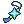
Professor Oak gives it to you in his lab in Pallet Town once your Johto Pokédex is complete. Which species count is listed under Completing the Pokédex.
Other influences
- Lure, Super Lure and Max Lure: while the item is active you get one extra roll. On sale in Goldenrod City.
- Starters: the preview in the lab rolls once per Poké Ball. The starter is shiny exactly when it was shiny in the preview. The Shiny Charm counts.
- Where you cannot catch Pokémon, there are no shiny Pokémon.
- Roaming Pokémon: whether they are shiny is decided once, when they start roaming.
- Nuzlocke setting “Shiny Clause”: “On” – The player can always catch shiny PKMN. RECOMMENDED! “Off” – The player can only catch a shiny PKMN if it's the first encounter.
Fixed rules for single Pokémon
Always shiny
Shiny exactly as in the preview
Bulbasaur (Pallet Town), Charmander (Pallet Town), Squirtle (Pallet Town), Chikorita (New Bark Town), Cyndaquil (New Bark Town), Totodile (New Bark Town), Treecko (Littleroot Town), Torchic (Littleroot Town), Mudkip (Littleroot Town)
In-game trades: never shiny
Nidoran♂ (Underground Path), Nidorino (Route 11), Meowth (Battle Frontier), Machop (Goldenrod City), Farfetch'd (Vermilion City), Seel (Cinnabar Island), Onix (Violet City), Voltorb (Olivine City), Electrode (Cinnabar Island), Lickitung (Route 18), Tangela (Cinnabar Island), Horsea (Pacifidlog Town), Mr. Mime (Blackthorn City), Mr. Mime (Route 2), Jynx (Cerulean City), Steelix (Olivine City), Seedot (Rustboro City), Plusle (Fortree City)
Second shiny colouring
These 25 Pokémon have a second shiny colouring. The game shows it when the setting “Alt Shiny” (tab “Features”) is set to “On”.


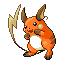
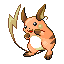
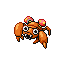
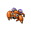


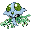

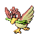


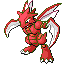

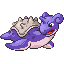


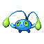


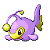


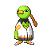


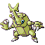
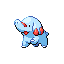


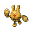

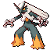
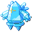
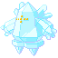